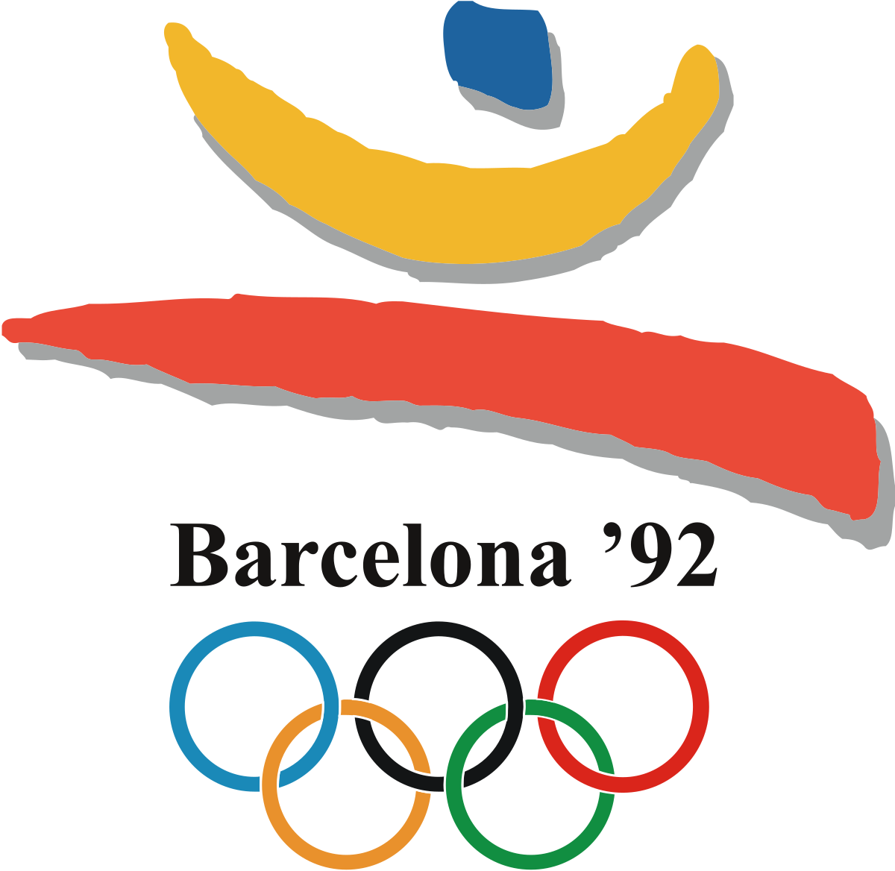
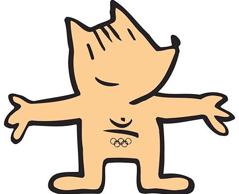

The Summer Olympics
Barcelona 1992
Date
25 July - 09 Aug
Country
Spain
Countdown
-9,697 Days
Website
Probably a better resource
Athletes Expected
9,356
Stadium
Estadi Olímpic Lluís Companys
Facts
First boycott-free Olympics since sometime
Soviet Union had dissolved, first time not represented
I'm sure there's more...
Useful Links
History of the Olympics
The International Federation
National Olympic Committees
Members
Sports Arbitration
Presidents
